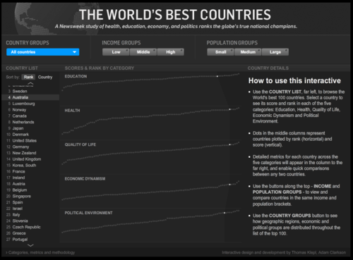

Tue, 17 Aug 2010 03:18:00 · infographic · health · education · economy · politic · shanghai · china
Interactive Infographic of The World's Best Countries
An interesting study of health, education, economy, and politics ranks the globe’s true national champions. http://is.gd/ekRQp

P.S. Best countries doesn’t necessarily means Happiest countries…